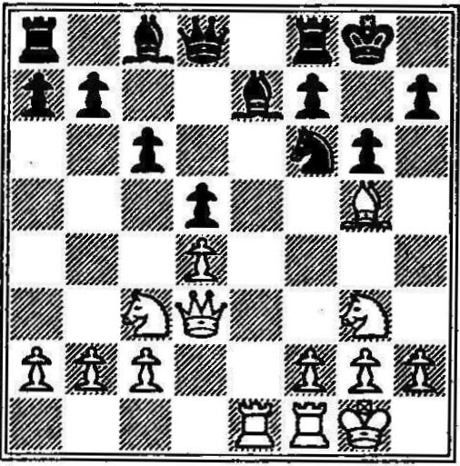
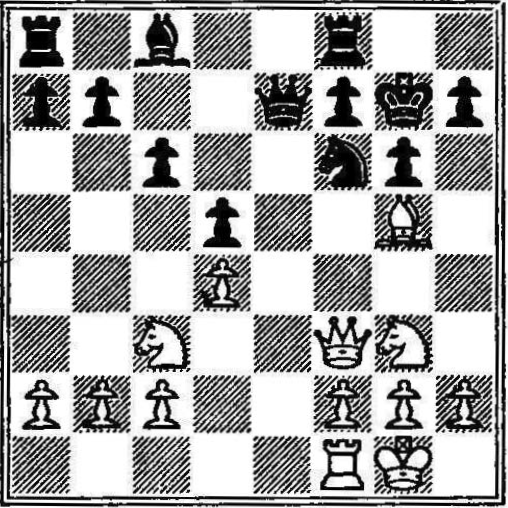

Partida Núm. 7
Defensa Francesa
Blancas: Spielmann
Negras: Wahle
Viena, 1926
1. e4 e6
{Con varios objetivos en perspectiva: uno de ellos es el de evitar que las blancas dicten la apertura.
Después de la respuesta convencional 1... e5, las blancas pueden jugar
la poderosa línea Ruy López, el Giuoco Piano, la Partida Vienesa, el ataque de Max Lange,
o inclusive algunos de los peligrosos gambitos. Otro de ellos es que la posición paralizada de las negras
suele inducir un ataque prematuro, que puede ser desastroso para las blancas.
Un tercer objetivo es que el peón en e6 apoye un avance mediante 2... d5, ataque sobre el peón de rey que
puede hacer que la iniciativa cambie de manos.
La Defensa Francesa no debe ser subestimada, pues oculta considerable energía tras una modesta fachada.}
2. d4 d5 3. Nc3 Nf6 4. exd5
{Muchos jugadores prefieren aumentar la presión con 4. Bg5 (que desarrolla una pieza y
deja impotente a otra del enemigo) en lugar de esta jugada, con lo que se afloja la tensión.
Spielmann, que gusta de las posiciones abiertas, elimina un par de peones a fin de dar a sus
piezas mayor espacio para sus actividades. }
4... exd5
{Mejor que tomar con el caballo. Las negras conservan un peón en el centro y liberan a su alfil de dama.}
5. Bg5
{Clava al caballo y amenaza con abrir la partida mediante -TODO hace que se pierda el peón de dama,}
(5... Be7 6. Bxf6 gxf6
{y las negras quedan con un peón doblado débil.}
(6... Qxf6))
5... Be7
{La manera más sencilla de eliminar la clavada del caballo. Además, cumple la primera ley del desarrollo rápido:
¡Hay que sacar las piezas de la primera fila!}
6. Bd3 Nc6
{El caballo amaga con tomar el peón de dama.}
7. Nge2!
{Después del acostumbrado desarrollo
7. Nf3, las negras clavan al caballo con 7... Bg4 y nuevamente amenazan al peón de dama.
Las blancas podrían salvar al peón, digamos con 8. Be2, pero perderían la iniciativa.
Después de la jugada del texto, si las negras clavan al caballo, 8. f3 repele al alfil y lo hace perder tiempo al retirarse.}
7... Nb4 8. Ng3
{Ahora vemos otra razón para desarrollar el caballo a e2. Las blancas quieren anclar una pieza
en f5, posición dominante para un caballo o un alfil. Una pieza no necesita hacer más que permanecer
allí y tomar un aspecto amenazador para desconcertar al enemigo.}
8... Nxd3+
{Misión cumplida. Las negras tienen una ligera superioridad
técnica por retener dos alfiles de largo alcance contra el caballo y
el alfil de las blancas, pero... }
9. Qxd3
{... con una pérdida de tiempo. Las negras han hecho tres jugadas con el caballo para cambiarlo
por un alfil que sólo se ha movido una vez. Además de eso, su caballo desapareció completamente
del tablero, mientras que el alfil dejó una pieza en su lugar.
El resultado es que las blancas tienen cuatro piezas activas en el campo contra dos de las negras.
Las blancas están también preparadas para enrocar en cualquiera de los dos lados y movilizar rápidamente ambas torres.
Si hay alguna ventaja, es de las blancas.}
9... g6
{La jugada del peón impide que las blancas coloquen su caballo
en f5, pero crea una debilidad orgánica en la posición de las negras,
debilidad irremediable. Las casillas f6 y h6,
que ya no están protegidas por el peón, son débiles
y lo serán de manera permanente.}
10. O-O c6 11. Rae1
{Las blancas se apoderan de la única columna abierta (pues las
torres deben estar en columnas abiertas o en columnas que puedan
abrirse) y clavan al alfil. Vale la pena hacer notar que
una pieza clavada no sólo no puede moverse, sino que tampoco
puede capturar. No protege a ninguna otra pieza, pues está
completamente paralizada. De ello se deduce que no sólo el alfil está
inmovilizado y en peligro (pues puede ser atacado una y otra vez),
sino que el caballo que depende de él para su protección no se encuentra
ya a salvo. En pocas palabras las negras se encuentran ahora amenazadas
con la pérdida de una pieza mediante 12. AxC.}
11... O-O
{El rey pone pies en polvorosa, eliminando de paso la clavada del alfil y conservando su caballo.

El adelanto del peón de caballo de las negras ha privado al
caballo de un apoyo estable. Está todavía defendido por dos piezas,
pero si no estuviera allí el alfil, quedaría defendido sólo una vez.
Efectivamente, si el alfil no estuviera allí, el caballo estaría clavado y
sujeto a un ataque duradero. El alfil aparece en ambas ecuaciones. Evidentemente, el alfil
es el criminal, ¡y hay que destruirlo! ¡Y hay que destruirlo inmediatamente,
antes de que las negras tengan tiempo de jugar 12... A3R!}
12. Rxe7! Qxe7
{Las negras tienen que recuperar la pieza, dejando al caballo clavado y blanco de un futuro ataque.}
13. Qf3
{Ejerciendo presión sobre la clavada y amenazando con tomar el caballo.}
13... Kg7
{El rey sale al rescate. Contra la defensa alternativa 13... Bf5,
Spielmann tiene esta bonita continuación:
14. Nxf5 gxf5 15. Qg3 (amenazando 16. Bxf6#) Kg7 (ó 15... Kh8 16. Qh4 Kg7 17. Qh6+ Kg8 18. Bxf5, y las blancas ganan)
16. Bxf6+ doble Kxf6 17. Qh4+ Ke6 18. Re1+ Kd7 19. Qxe7+, y todas las piezas de las negras han salido.

Otra vez, la amenaza inmediata de las blancas es sencilla: 15. Bxf6+, ganando instantáneamente.}
14. Nce4 dxe4 15. Nxe4
{Son tres las piezas que atacan ahora al indefenso caballo. Las blancas amenazan ahora 16. Bxf6+ seguido por 17. BxQ.}
15... Qe6
{Si 15... Qxe4, las blancas tienen la agradable disyuntiva de
ganar la dama con 16. Bxf6+ (eliminando al protector de la dama),
seguido por 17. Qxe4, o de forzar el mate mediante 16. Qxf6+ Kg8
16. Bh6, seguido por 18. Qg7#.
En esta última línea de juego, adviértase que las blancas plantan
firmemente sus piezas en los dos agujeros de la posición de las
negras, f6 y h6, casillas que ya no están protegidas por el peón
del caballo después de su avance. Con su última jugada, las negras
salvan a la dama. Todavía tienen ventaja de material, pero
han perdido la partida, pues las piezas de las blancas se insinuarán
por las casillas negras para llegar al rey.}
16. Bxf6+ Kg8
{Si 16... Kh6 17. Qf4+ y mate en la siguiente jugada.}
17. Qf4
{Amenazando con la invasión final en h6 seguida por un mate
en g7: triunfo en las casillas negras.
Las negras, impotentes para evitar el mate, abandonaron el juego .}
1-0